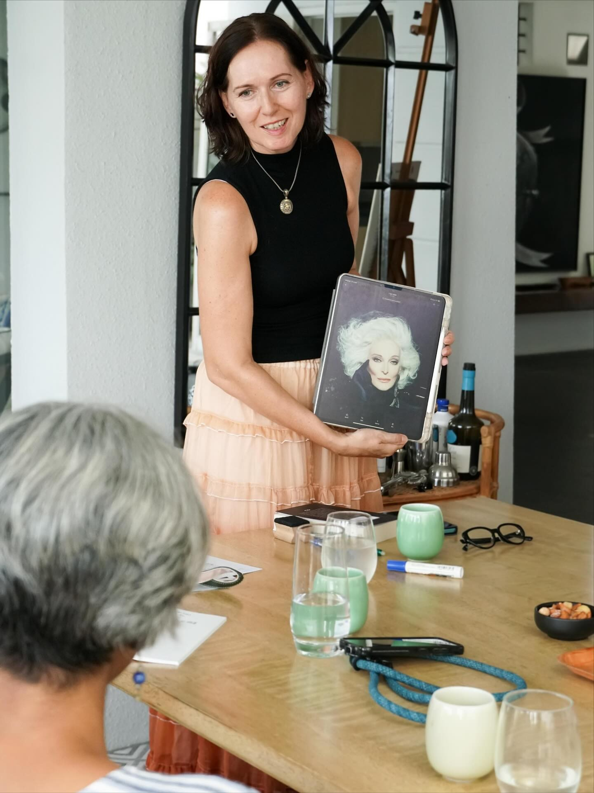

Know your story.
Claim your next chapter.
Live in alignment with
who you truly are.
My work invites you into a deeper dialogue with your inner archetypal energies so you can move from unconscious patterns to conscious authorship, and step into the story you are truly here to live.

Once upon a time, there was an ugly duckling who felt different, misunderstood, and strangely misaligned — until one day it discovered its true nature. It had never been a duck at all, but a beautiful swan.
Until we truly know who we are, we may live a life that was never meant for us. Beneath the surface, invisible currents shape our choices and repeat old patterns. Once brought into awareness, these forces turn into allies — hidden gifts waiting to be claimed.
Where you are vs. where you could be
What you're experiencing
What becomes possible
How coaching with me works
Using stories, archetypes, and creative thinking to shift how you see yourself and the world.
See clearly
We explore the stories and patterns shaping your life: the ones you chose and the ones you inherited.
Shift perspective
Using Jungian archetypes and creative semiotics, we reframe how you relate to yourself and the world.
Curate your vision
You leave with a clear vision, renewed purpose, and a concrete roadmap to guide you forward.
Choose the path that fits you

Jungian Coaching
Reflective enquiry, archetypes, and creative thinking to help you find clarity and direction.
S$180/hr Learn More
Archetypal Reading
A 1.5-hour exploration of your archetypal constellation with a detailed Map, Snapshot, and Fantasy Portrait.
S$489 Learn MoreFantasy Portrait
Curated fine art portrait collections across eras, worlds, and identities.
From S$188 Learn MoreWhat clients say
"I've had two wonderful sessions of Active Imagination with Anne. They've been deeply supportive in helping me access my own imagination and intuition."
— Client"When I met Anne, I knew that my creative coaching experience would be truly transformative. Her empathy and deeply intuitive approach to coaching has enabled me to uncover parts of my true self and overcome creative blockages and fears that I didn't even realize were holding me back. Two of her greatest strengths are active listening and giving personalised insightful guidance, which has reignited my creative spark — something I had found difficult to reawaken for many years. It was reassuring to have a coach who is able to make powerful connections between my true purpose, core values, and my life long ambition to become a writer."
"Anne's support has not only given me clarity but has also instilled a newfound confidence in my abilities. If you're looking for someone who genuinely understands the creative process in a safe and trusted space and can help you move past fear based limitations, I cannot recommend Anne highly enough."
— Kelly C., WriterFrequently asked questions
If you're feeling stuck, uncertain about a decision, or sensing a gap between where you are and where you want to be, coaching can help. Send me a message and we'll explore whether my approach is a good fit.
This work combines Jungian depth psychology, narrative coaching, and active imagination to access the unconscious patterns shaping your decisions.
All sessions happen over video call. You can reschedule with 24 hours' notice. Available in English, German, and Italian.